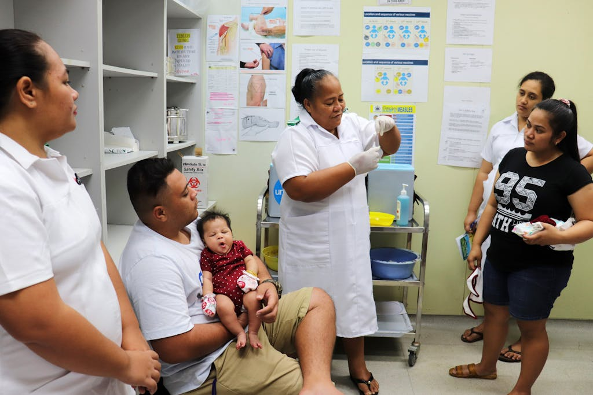
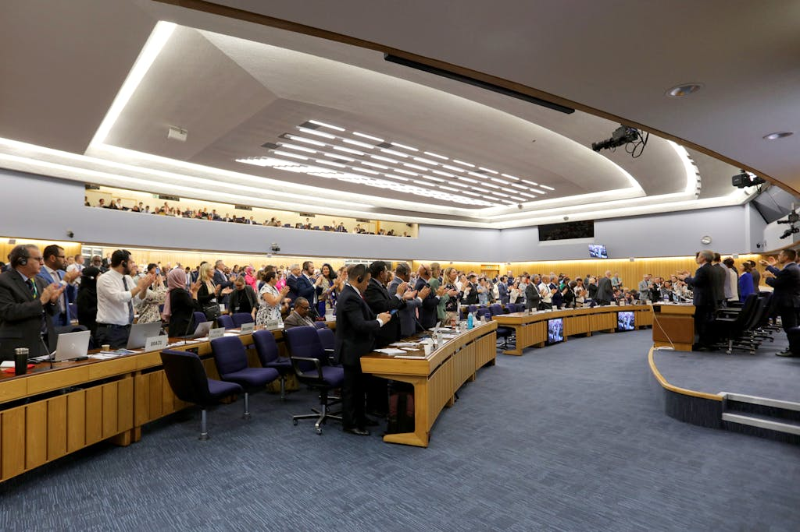
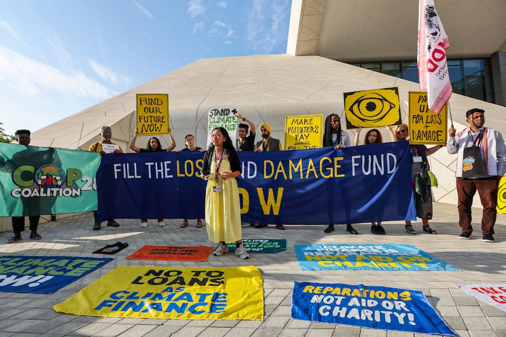
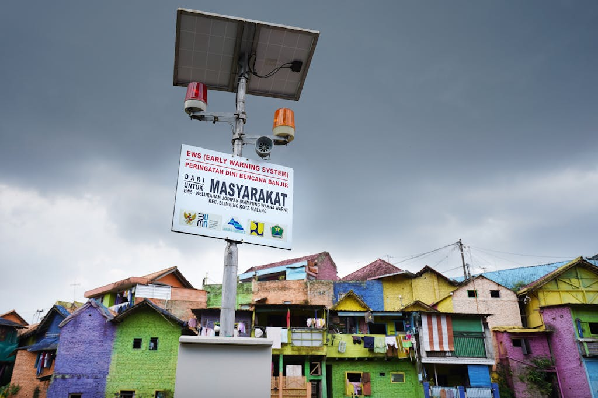
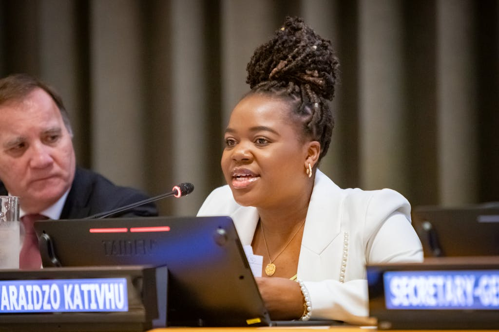
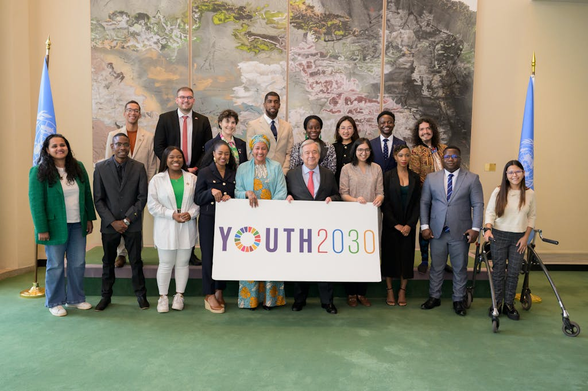

A young protester onstage calling for the end of fossil fuels at the closing of the Global Climate Action High-Level Event during the UN Climate Change Conference, COP 28 in Dubai, United Arab Emirates. Photo: COP28/Anthony Fleyhan
From major elections across the globe to simultaneous and converging catastrophes, 2024 will be a pivotal year that shapes the geopolitical landscape and humanity’s collective future.
The new year begins against a backdrop of unprecedented devastation, division, and instability as 27 regions experience massive violence and political insecurity. Meanwhile, people’s rights are in jeopardy worldwide from threats old and new. At the same time, the year ahead provides meaningful opportunities for progress, whether at the ballot box or within our multilateral system.
As we look ahead, we spoke with leaders across the UN Foundation about the five issues they think will shape our world the most in 2024.
1. CRISES ARE CONVERGING EVERYWHERE AND ALL AT ONCE
The world is deeply interconnected, and increasingly, so, too, are the crises and risks we face. To effectively tackle our shared challenges and accelerate global progress, we need to reject old siloed ways of doing things, embrace new ways of thinking, and push for systemic change. Too much is at stake if the world doesn’t come together to leverage our collective capacities for greater impact and progress.
David Steven, Senior Fellow: This is definitely an age of global crisis. It often feels like the end of a game of Tetris, when the blocks start falling so quickly that you can’t see what’s coming next and there’s a feeling that you can’t keep up.
Julie Kofoed, Senior Director, Sustainable Development Initiatives: The complex, converging crises pummeling our world only reinforce the need for systems change. I was excited to see those conversations emerge after the latest Global Sustainable Development Report. The central idea is that we need to work through strategic entry points in order to have impact across all of the Sustainable Development Goals. So it’s a move away from the emphasis we often see on individual SDGs. Rather than choosing one SDG to champion, we’re supposed to engage in a transformative way across entry points to have an impact across all 17 SDGs. It’s the primary message I want to see pushed across the UN system in 2024.
Caroline Kleinfox, Director, U.S. SDG Policy Planning: The SDGs are a powerful tool to help us break down existing data silos and structural silos across issues. By design, the framework gives us a way to confront our challenges in a coordinated way.

A Nurse Practitioner explains the importance of having children vaccinated, including against rotavirus, in Samoa. Photo: UNICEF/Akshaya Mishra
Cecilia Mundaca Shah, Senior Director, Global Health: With climate change, we can easily see how issues overlap. Take air pollution, for example, which clearly impacts our health. And as temperatures rise and extreme weather becomes more common, we’re also seeing vector-borne diseases like malaria and dengue appear in countries that had either eliminated the disease or had never seen it. The climate crisis is a health crisis.
But the problem is, our systems haven’t caught up. There’s a growing realization that the way we’ve always worked in the global health field — and probably in other disciplines as well — is too siloed. We need to be thinking differently. How can our health systems reduce emissions to help mitigate climate change? And on the adaptation side, how can we incorporate data from early warning systems — which the UN is rapidly scaling up in the next few years — into our health systems?
Luisa Kislinger, Senior Manager, Girls and Women Strategy: I just came from a workshop in Mexico, where our colleagues from the Caribbean region shared that they secured funding for gender equality programming by tying it to climate justice. They’re doing joint programming around the two agendas because there’s more funding available for climate — and the reality is that climate and gender justice are themselves inextricably linked.
Cecilia: Another example is antimicrobial resistance, or AMR. This is not just about prescribing antibiotics, it’s about the antibiotics we use to grow our food and raise our livestock. It’s a really complex issue that needs a whole-of-society response.
There will be a high-level meeting on AMR in 2024, which presents an opportunity to make this a political priority — and not just for Ministers of Health — because AMR, like a pandemic, is a global risk that will collapse our societies and cause our economies to fully fail. So we need to see a strong political declaration and outcome document from that meeting that positions AMR not only as a health crisis, but also as a systemic global risk.
2. OUR FUTURE IS ON THE BALLOT IN 2024
More people will head to the polls in 2024 than ever before: 76 countries will hold elections — whether at the national, regional, or local level — representing over half of the world’s population. Our experts will be watching to see how the world shows up and participates in this major election year, whether they will vote for change, and what the outcomes will mean for women’s rights and representation, in particular.
Michelle Milford Morse (M3), Vice President, Girls and Women Strategy: This is a bumper election year. About half of the world’s population — that’s more than 4 billion people — will have an opportunity to go to the polls in 2024.
But the sad reality is that even people who can participate in democracy often don’t. We’ll miss this moment and opportunity for change if we don’t figure out how to persuade, incentivize, and encourage people to vote.
Luisa: People around the world will be watching to see what the U.S. election, in particular, means for the global gag rule. An expanded rule would have serious implications for funding health services across the globe, especially those that support women and people living with HIV and AIDS.
M3: The future belongs to the people who show up next year where they can. And I’m really interested to see what happens in a year when so many people around the world have a chance to vote for change.
Julie: I’m an eternal optimist, but this does feel like a monumental moment. There are just so many compounding issues right now — from conflicts to climate change — that I think people are coming out of complacency, perhaps enough to produce something quite significant.
M3: I want to see more people who love democracy embrace the women’s movement. Franky, they go hand in hand — especially amid a growing love affair between autocrats and sexists.
Autocrats fear women. And the women’s movement needs more allies. So if we can align the women’s movement with the movement for democracy, we can get a lot done — and we can potentially build a more peaceful world, too. As the UN Deputy Secretary-General [Amina Mohammed] said at our recent We the Peoples awards dinner, “Men like to win wars; women like to end wars.” I don’t want to paint with too broad a brush, but why don’t we finally give women their rightful spot at the table and a real shot at negotiating and building peace? Isn’t it time to take seriously the imperative to have women’s full participation in peace and security matters? That starts by electing more women and supporting candidates who support women’s rights enthusiastically and without exception.

At the International Maritime Organization’s headquarters in London delegates from over 100 countries applaud the passing of a new global agreement to reduce greenhouse gas emissions in the shipping industry to net zero. Photo: International Maritime Organization
3. FIXING A BROKEN FINANCE SYSTEM, AND RECOGNIZING SHIFTS IN POWER
Our finances are broken. The way the world handles funding for what should be global priorities — from climate to global health to gender equality — is insufficient, unsustainable, and inequitable. Our experts are eager to see conversations continue in 2024 around international financial reform and will be watching closely to see if those reforms address antiquated power dynamics, while simultaneously looking for creative ways to help bridge the gap in the immediate future.
Julie: It’s been interesting to see how the conversation around international financial reform has grown from a niche topic to a mainstream narrative in the past year. And the conversation on financial reform ties into an even larger one around the shape of our current international system — and what needs to change in order for us to actually achieve the SDGs and the future we want.
David: I think we’re beginning to see a diffusion of leadership within the international system, with influence shifting away from older countries with stable or shrinking populations and toward young countries where the bulk of future generations will be born. With many of those countries in Africa, we should all be excited about the first G20 to be held on the continent when South Africa hosts in 2025 — especially following Brazil’s presidency in 2024.
Pete Ogden, Vice President, Climate and Environment: International financial institution reform is definitely an issue to watch; there is simply no way to scale climate finance without it. And with new leadership at the World Bank, there is an opportunity to make substantial progress this year if countries can mobilize the necessary will. But institutional reform is not a silver bullet, and we need to be more creative about how we mobilize resources with the tools available to us now. Look at what’s happening at the International Maritime Organization.
In what I consider a watershed moment, this past July the IMO raised its ambition and adopted a new greenhouse gas strategy with a goal of reducing emissions to net zero “by or around” 2050. This was significant because the sector already accounts for 3% of global emissions and that share will grow substantially if we don’t do something about it.
Now, the IMO will develop the regulations necessary for achieving this goal. This will include a fuel standard, and, notably, an “emission pricing mechanism” that could be an important tool in mobilizing the finance needed to support a just and equitable transition to a clean, sustainable global shipping sector.
These and many other finance-related questions will be debated next year against the backdrop of a COP where climate finance will be at the forefront of the agenda. With countries staring down the deadline to negotiate a new collective goal on climate finance, this could very well be the most important — and most contentious — item on the agenda at COP 29 in Baku, Azerbaijan, next November.
Cecilia: These are challenging conversations to have, but it’s so important that we have them. Funding for global health has been decreasing; there’s a feeling that global health had its time and its share of the money, which is now needed in so many other places.
Looking ahead, both The Global Fund and Gavi, The Vaccine Alliance will have to make investment cases for their next replenishment cycles. We fell short on those replenishments the last time around, so how is it going to be different this time?
Like Pete said, we’ve also been pushed to think about how we can do more with the resources we have. For example, there was a realization that funding streams cannot be vertical. If we’re going to train a health care worker, why can’t we train that person to address several diseases instead of just one? That sounds obvious, but it hasn’t been the reality.
Lori Sloate, Senior Director, Global Health: Definitely. There is only one health system in a country. There aren’t separate systems that deal with immunization, or HIV, or polio. This presents a real challenge for partners given how they’ve traditionally operated. I will be watching, pushing, and working with our partners in 2024 to make sure assets from polio and immunization services, like surveillance labs and networks, are part and parcel to any resilient health system — especially in the face of climate change, AMR, and preparing and responding to future health emergencies and pandemics.

Climate activists call for financial commitments to the Loss & Damage Fund during the UN Climate Change Conference, COP 28 in Dubai, United Arab Emirates. A deal was reached at COP 28 to operationalize the Fund, which will help compensate the most climate-vulnerable countries for the financial and economic impacts of climate change. Photo: COP28/Mahmoud Khaled
4. SAFEGUARDING RIGHTS AND EQUITY
Whether it’s the rights of girls and women, the rights of people in climate-vulnerable countries, or ensuring an equitable future for young people today and tomorrow, 2024 will be defined by whether and how we rally to protect people’s rights and safeguard their futures in the face of old and new threats.
Inés Yábar, Lead Next Generation Fellow: While the concept of a “young country” is still relatively new, it’s taking hold as more attention is paid to the needs of countries with young, growing populations. By the end of this century, 80% of the global population will live across Africa and Asia. So when we think about achieving the SDGs and securing a better world, we have to be thinking about the places that will be home to the majority of future generations. Do young people in those countries have access to a quality education? Are they able to enjoy good health? Are there enough jobs? You can clearly see the imperative of the SDGs in the lives of young people living in those countries. And we cannot fail them. We can’t leave 80% of the world behind, because what kind of world would that be?
Pete: There were some positive developments at COP 28 in terms of addressing the needs of many of the most climate-vulnerable communities. Most notably, a brand new climate fund was established that is dedicated to addressing loss and damage caused by increasingly devastating climate-related impacts. The Loss and Damage Fund garnered some $700 million in pledges, and while this may pale in comparison to the full economic and financial impacts of climate damage, it is still vitally needed. It’s essential that countries make good on their promises to deliver this funding.
Countries also reached a new agreement on how to better operationalize the Paris Agreement’s global goal on adaptation. While this new adaptation framework does not provide the kind of clarity and direction that we had hoped, it nevertheless offers a foundation on which to build, and it brings some sorely needed political attention to the adaptation challenge.
The Secretary-General’s initiative to ensure that the whole world has access to early warning systems by 2027 also got a boost at the COP, with some additional funding announced from Sweden, Denmark, and France. But there is still a long way to go — about half of the world lacks early warning systems — so we need to see more progress and support for this critical effort in 2024.

An early warning system in Kampung Warna Warni Jodipan, near the Brantas River in Malang, Indonesia is designed to give nearby communities time to prepare for impending floods. Photo: Anom Harya
Luisa: As AI [artificial intelligence] keeps shaking up our world in 2024, the issue of technology-facilitated gender-based violence must be front and center. Not only do digital platforms facilitate harassment against girls and women, they facilitate violence. We see this happen all the time with women journalists or with women who are running for political office, and it effectively leads to the suppression of their voices — just when we need to be elevating them the most.
In 2023, the UN convened its first serious examination of all the ways technology and gender equality are linked at the 67th Commission of the Status of Women. Really interesting conversations came out of that and need to be further developed in 2024 — things like data protection around apps that track menstruation, and how that can put girls and women seeking abortion care at risk in certain places. There are still so many issues, like the roles and shared responsibilities of the public and private sectors, that need to be sorted out as we work to better protect the safety and freedom of girls and women online.
I’ve also been interested to see growing momentum around the concept of “gender apartheid,” and I will definitely be watching to see how that continues to evolve in the year ahead. There have been serious efforts to better understand the concept and form international consensus around its meaning. The goal is to move toward the development of an international legal framework so that gender discrimination can be considered a crime.

Varaidzo Kativhu, Founder and Director of Empowered by Vee, addresses the preparatory ministerial meeting for the Summit of the Future. The Summit, scheduled for September 2024, will mark a once-in-a-generation opportunity to enhance global cooperation to tackle collective challenges, address gaps in global governance, accelerate progress on the Sustainable Development Goals, and ensure our multilateral system can deliver for future generations. Photo: UN Photo/Laura Jarriel
5. FUTURE-PROOFING THE UNITED NATIONS
In its 78th year, the UN remains a vital and indispensable institution — the only global platform that gives a voice to every country and person on Earth. Our experts explain why delivering on promises is one of the most important things the UN can do to bolster its credibility in the years ahead. And why the Summit of the Future, scheduled to take place during the 79th UN General Assembly in September, is an opportunity to reset and refocus on the needs of future generations.
David: With an international system that is constantly in crisis, the world increasingly finds it battered when it turns to the system for answers. But the truth is that for most of the big issues countries face, the only solutions are international. Solutions are very seldom found within national borders. And that creates continual demand for international cooperation.
Luisa: I often ask people, what’s the alternative? If not the UN, then where are we going to go to get global support and agreement for gender equality? There isn’t an alternative. Because despite their flaws, the UN and the spaces around it are invaluable. They foster conversations around solving the world’s biggest problems. Even when countries don’t agree, it’s the best platform to find collective solutions.
David: Moving forward, it’s essential that the UN keeps the promises it’s already made. The UN must be a platform to continue marshaling the finance, strategies, solutions, and partnerships that are needed to deliver on all 17 SDGs and the promises made under the Paris Agreement. Globally, for the sake of the credibility of international cooperation, if we make grand promises and then halfway through the timelines we begin to lose interest or give up — it’s game over.
Pete: Coming out of the Global Stocktake, countries have to demonstrate that they will make the course correction needed to get them back on track to meeting the goals of the Paris Agreement. The Paris Agreement does not have a 2030 deadline the way the SDGs do, but it does require that countries set new greenhouse gas reduction targets every five years, and the next round is due by early 2025. Hopefully the experience of the Global Stocktake and COP 28 will help to drive countries to get to work immediately on crafting bold new goals that will bend the global emissions curve back into line with the Paris Agreement’s temperature goals.
David: I also want to see business and civil society brought into the UN system in a way that has sufficient integrity and is structured, systematic, and properly funded to allow them to help solve some of the key challenges of our time.
Inés: There is a lot of excitement around the creation of the first UN Youth Office, starting with the fact that countries came together and made this a priority, establishing the office with a clear mandate and budget. It’s an example of how the UN can adapt and respond to civil society. The Youth Office represents an institutionalization of youth voices in the UN and demonstrates that young people can lead at the highest levels. I’m also looking forward to seeing how other networks, like the Next Generation Fellowshosted by the UN Foundation and the Secretary-General’s Youth Advisory Group on Climate Change, can engage with the new Youth Office to be even more integrated with the UN system.

UN Secretary-General António Guterres meets with Young Leaders for Sustainable Development Goals. Throughout their two-year term, 17 young leaders from around the world engage young people on the 2030 Agenda through their existing platforms, networks, and initiatives as well as through advocacy with the United Nations and partners. Photo: UN Photo/Manuel Elías
FIGHTING FOR THE FUTURE AT THE SUMMIT OF THE FUTURE
David: The Summit of the Future presents a rare opportunity to think critically about what we can do now to prepare for the next 10, 20, or 50 years. Being able to take more farsighted decisions and actions matters for everyone, but especially for younger countries, young people, and future generations. So the first thing that we all need to do is fight for the future in the Summit of the Future.
That includes who gets to shape the agenda. Is it going to be set by older, richer countries that have entrenched power within the international system, or will this be a moment for countries and regions that have a large, unprotected interest in the future to mobilize and work together to protect that interest more effectively?
And then, I want to see the Summit build mechanisms that allow us to prevent and respond to emergencies more effectively. If we’re always in firefighting mode, then we can never look ahead. We need to get better at preventing crises from happening in the first place. And we have a Secretary-General who singled out prevention as a top priority upon taking office, and this Summit is an opportunity for him to refocus on that prevention message. If we can get a handle on the immediate emergency agenda and deliver on the promises we’ve made, then we can begin to think bigger and bolder about future challenges. If we can do that, then this Summit can really make a difference.
Inés: I want to pick back up on David’s point about promises made, because for me, the Summit of the Future is a chance to look beyond our current focus, which is the people who exist today. And I know people are scared to look beyond the SDGs, because we aren’t at the finish line yet, but the future has always been at the center of the Global Goals — they are designed to build the more sustainable world that we want now, but also that we want to leave behind for the generations that follow.
I want to see the Summit of the Future be a catalyst for action on the SDGs, because if we achieve the Goals we will have achieved something meaningful for future generations. And success, for me, will be measured by whether or not that narrative can break through so it’s not only young people who are burdened with having to think about future generations, but it’s something that everyone — of all generations — works toward together.
In many ways, what happens in 2024 will depend on whether countries can unite behind a more inclusive, future-proofed multilateralism. The new year offers world leaders the chance to prove they can work together to overcome the existential threats that we, as a global community, are facing.
“The multilateral system belongs to all countries, and we must collectively find a way to make it fit for the future,” as UN Deputy Secretary-General Amina Mohammed told a gathering of leaders in Iceland in October. “This will require compromise and genuine leadership.”
Any global progress in 2024 will also require peace. As the Deputy Secretary-General noted in the same speech, “There is no peace without sustainable development and there is no development without peace.”
Dynahlee Padilla-Vasquez, Communications Officer, contributed to this article.
SOURCE: UN FOUNDATION